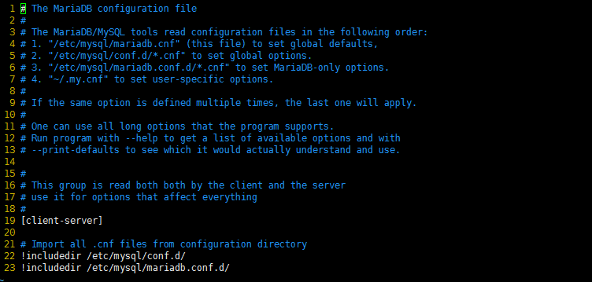
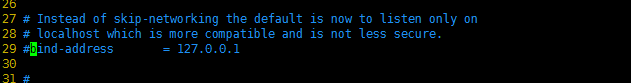
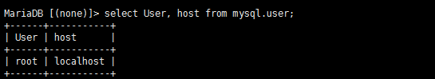
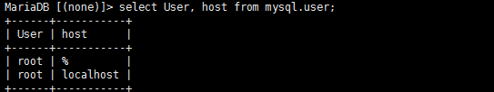
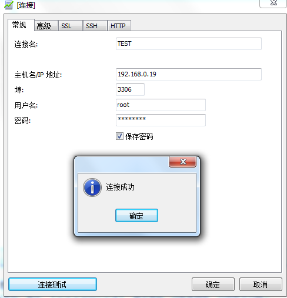

最近在配置MySQL远程连接的时候发现我的MySQL数据库采用的是 MariaDB 引擎，与普通的数据库配置有点不同
经过查找资料终于完成了，特此记录方便以后查询
MariaDB 与普通的MySQL数据库的一个不同在于它的配置文件不止一个，它将不同的数据放入到不同的配置文件中，之前的/etc/mysql/my.cnf内容如下：

从文件中的注释上来看，它主要有这么几个配置文件
- /etc/mysql/mariadb.cnf 默认配置文件,
- /etc/mysql/conf.d/*.cnf 设置全局项的文件
- “/etc/mysql/mariadb.conf.d/*.cnf” 设置与MariaDB相关的信息
- “~/.my.cnf” 设置该账户对应的信息
这也就是为什么我们在my.cnf做相关设置有的时候不起作用（可能在其他配置文件中有相同的项，MySQL最终采用的是另外一个文件中的设置）。
根据官方的说法， MariaDB为了提高安全性，默认只监听127.0.0.1中的3306端口并且禁止了远程的TCP链接，我们可以通过下面两步来开启MySQL的远程服务
- 注释掉skip-networking选项来开启远程访问.
- 注释bind-address项，该项表示运行哪些IP地址的机器连接，允许所有远程的机器连接
但是配置文件这么多，这两选项究竟在哪呢？这个时候使用grep在/etc/mysql/目录中的所有文件中递归查找，看哪个文件中含有这个字符串
我们输入：，结果如下：1
grep -rn "skip-networking" *
十分幸运的是这两项都在同一文件中（我自己的是没有skip-networking项）
我们打开文件/etc/mysql/mariadb.conf.d/50-server.cnf，注释掉bind-address项，如下：
只有这些仍然不够，我们只是开启了MySQL监听远程连接的选项，接下来需要给对应的MySQL账户分配权限，允许使用该账户远程连接到MySQL
输入查看用户账号信息：1
select User, host from mysql.user;

root账户中的host项是localhost表示该账号只能进行本地登录，我们需要修改权限，输入命令：修改权限。%表示针对所有IP，password表示将用这个密码登录root用户，如果想只让某个IP段的主机连接，可以修改为1
GRANT ALL PRIVILEGES ON *.* TO 'root'@'%' IDENTIFIED BY 'password' WITH GRANT OPTION;
1
GRANT ALL PRIVILEGES ON *.* TO 'root'@'192.168.100.%' IDENTIFIED BY 'my-new-password' WITH GRANT OPTION;
注意：此时远程连接的密码可能与你在本地登录时的密码不同了，主要看你在IDENTIFIED BY后面给了什么密码
具体的请参考GRANT命令
最后别忘了
1 | FLUSH PRIVILEGES; |
保存更改。再看看用户信息:

这个时候发现相比之前多了一项，它的host项是%，这个时候说明配置成功了，我们可以用该账号进行远程访问了
输入
1 | service mysql restart |
重启远程服务器，测试一下：

如果这些都做完了，还是不能连接，可以看一下端口是不是被防火墙拦截了
参考地址：官方文档